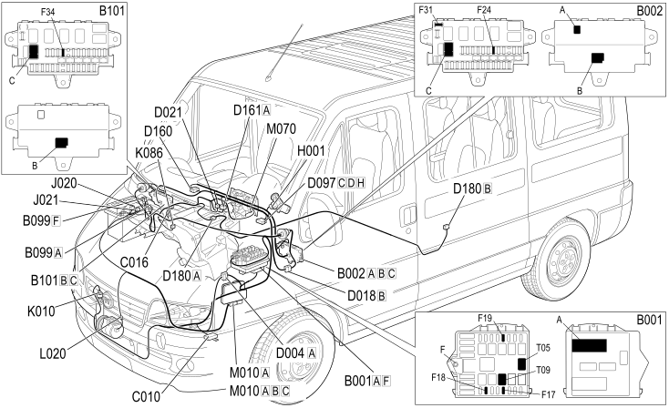

E6021 COMPRESSOR ENGAGEMENT COMPONENT LOCATION
- Path
- Electrical equipment > 1 ELECTRICAL FUNCTIONS > E60 CLIMATE CONTROL SYSTEM > E6021 COMPRESSOR ENGAGEMENT > E6021 COMPRESSOR ENGAGEMENT COMPONENT LOCATION
- Kind
- topic
- Applies to
- all engines; all production periods
- Interactive page
- https://sloeber94.github.io/elrnDB-fDct/en/#/244001991
Applies to: all engines; all production periods
Component location

Component code | Description | Reference to the assembly |
|---|---|---|
JUNCTION UNIT | 5505A | |
JUNCTION UNIT UNDER DASHBOARD | - | |
MAXI FUSE BOX ON BATTERY | - | |
OPTIONAL JUNCTION UNIT UNDER THE DASHBOARD | - | |
LEFT FRONT EARTH | - | |
AIR CONDITIONING UNIT EARTH | - | |
FRONT/ENGINE COUPLING | - | |
ADDITIONAL FRONT/DASHBOARD COUPLING | - | |
DASHBOARD/AIR CONDITIONING-HEATER COUPLING | - | |
SHORT CIRCUITING COUPLING | - | |
DASHBOARD/OPTIONAL DASHBOARD COUPLING | - | |
OPTIONAL DASHBOARD/AIR CONDITIONING COUPLING | - | |
AIR CONDITIONING/ADDITIONAL AIR CONDITIONING COUPLING | - | |
IGNITION SWITCH | ||
AIR CONDITIONING COMPRESSOR ENGAGEMENT RELAY | - | |
COMPRESSOR ENGAGEMENT ADDITIONAL REMOTE CONTROL SWITCH | - | |
4 STAGE PRESSURE SWITCH | ||
FROST SENSOR | - | |
AIR CONDITIONING COMPRESSOR ENGAGEMENT ELECTRO-MAGNET | - | |
ENGINE MANAGEMENT ECU | - | |
CLIMATE CONTROL SYSTEM CONTROL UNIT | - |
Topics linked from this page (23)
- 5040B SYSTEM SAFETY CHECK DEVICES
- 5520A IGNITION SWITCH
- B001 JUNCTION UNIT
- B002 JUNCTION UNIT UNDER DASHBOARD
- B099 MAXI FUSE BOX ON BATTERY
- B101 OPTIONAL JUNCTION UNIT UNDER THE DASHBOARD
- C010 LEFT FRONT EARTH
- C016 AIR CONDITIONING UNIT EARTH
- D004 FRONT/ENGINE COUPLING
- D018 ADDITIONAL FRONT/DASHBOARD COUPLING
- D021 DASHBOARD/AIR CONDITIONING-HEATER COUPLING
- D097 SHORT CIRCUITING COUPLING
- D160 DASHBOARD/OPTIONAL DASHBOARD COUPLING
- D161 OPTIONAL DASHBOARD/AIR CONDITIONING COUPLING
- D180 AIR CONDITIONING/ADDITIONAL AIR CONDITIONING COUPLING
- H001 IGNITION SWITCH
- J020 AIR CONDITIONING COMPRESSOR ENGAGEMENT RELAY
- J021 COMPRESSOR ENGAGEMENT ADDITIONAL REMOTE CONTROL SWITCH
- K010 4 STAGE PRESSURE SWITCH
- K086 FROST SENSOR
- L020 AIR CONDITIONING COMPRESSOR ENGAGEMENT ELECTRO-MAGNET
- M010 ENGINE MANAGEMENT ECU
- M070 CLIMATE CONTROL SYSTEM CONTROL UNIT